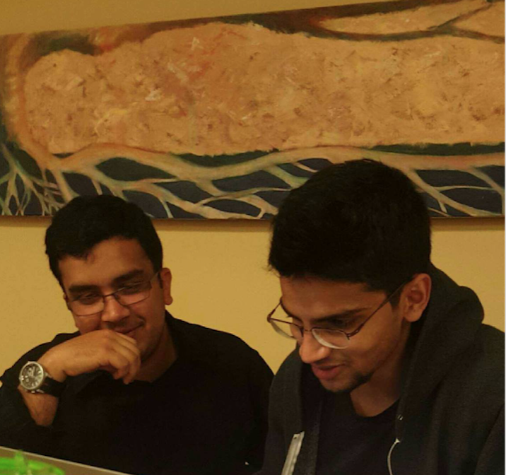

Inspect other disks
File type: .txt
I remember the countless times I've worked at Fahim's home, sometimes staying overnight. He'd always let me sleep on the bed. We would always joke about the stupidest things, but I laugh the most when I'm with him.
File type: .txt
The time I stayed with him after his surgery... I swear, that guy never stops smiling. I remember the nurse told him to walk to keep his blood flowing/muscles active shortly after he was admitted, and he was smiling as he limped down the hallway (with the gadgets attached to him and all).
File type: .txt
Those 231N and 229 projects. The awesomeness of working with him and getting better at CS because of it. Once, for 229, I remember we got our first real result near the end of the quarter and we all went crazy haha. We always ran our jobs to the song '300 violin orchestra.'
File type: .txt
The conversations that we've had about life. I love how he always cares so deeply about what's going on in your life. He always makes sure to check up on me every time he sees me.
File type: .txt
The endless number of times i've badgered him to speak to me in Urdu lol. Whenever i talk to him in Urdu, it reminds me a lot of home and my family in India. There have been many a time where I've been depressed or down, and he would make sure to talk or joke with me in Urdu. It always cheered me up. He never let that get in the way of including others in the conversation, though. With others around, he would respond to me in English even if I spoke in Urdu haha. It shed light on my own selfishness and the need for me to be more conscious of others. He did so in a way that didn't make me feel bad.
File type: .img
